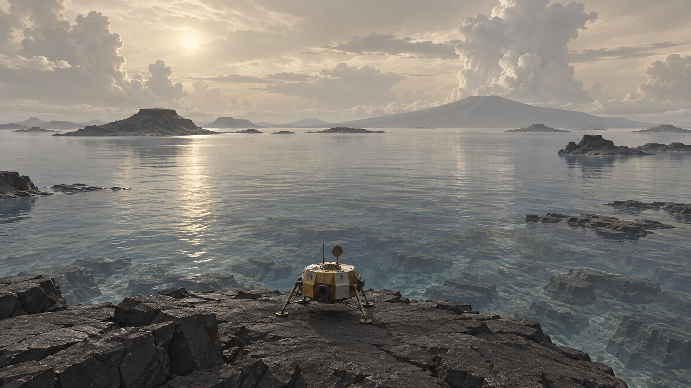
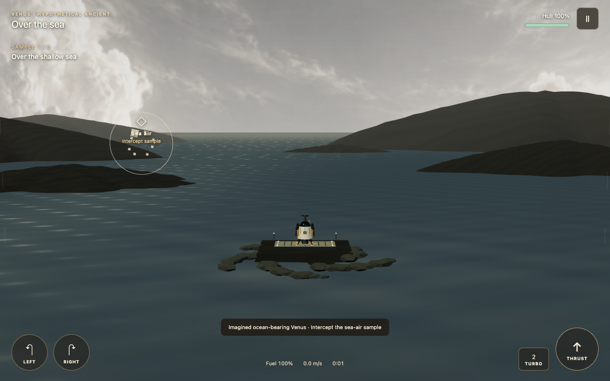
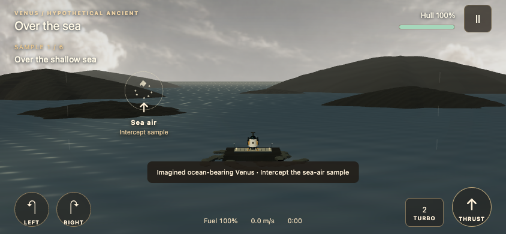

Through the Veil — hypothetical ancient Venus approved direction
October 7, 2026. Task 10 originally delivered the research/design direction below. The subsequent authorized construction pass now implements the standalone ancient variant using the revised modern ascent system. Q1 is settled from prior producer direction, confirmed October 7; ancient-rover construction notes remain superseded.
Latest implementation — higher island arc
The older ascent/rendezvous brief below is retained as production history. Current ancient Venus follows six ordered ringed sampling orbs along a wide arc, peaking at 360 authored game metres, then descends to the far island pad. It does not switch to a cloud-floor scene or end at a transporter. Camera look-ahead eases when a target is collected. The first sea reveal stays low and clear. These are compressed game distances, not recovered ancient altitudes. Current flights/records use separate v3 keys. Scores out of 100 emphasize time, then fuel and actual landing quality.
Original approved direction — historical
Keep the ascent craft and current controls. Launch directly above an imagined shallow sea beside a dark volcanic island, climb through water clouds, and emerge above a luminous cloud horizon for the existing rendezvous. The defining contrast is a visible watery surface below a gentler atmosphere, with the same skill of anticipating drift while climbing. Avoid a jungle, inhabitants or a rover: habitability does not establish life, and neither vegetation nor that specific landscape is known.
Activity: Through the Veil · hypothetical ancient Venus. A short prelaunch caption says “An imagined ocean-bearing Venus, inspired by climate models. Whether Venus ever had oceans remains debated.” Do not require a campaign, discovery checklist or interruption by learning cards. This variant belongs to the Special, independently of the selected calendar date; no exact historical date or synchronized solar-system epoch is implied.
Research boundary
Way et al. (2016), NASA GISS model temperate conditions under assumed shallow water, atmosphere and slow rotation. Their result is conditional, not evidence of an observed ocean. Way and Del Genio (2020) explore multiple climate histories and stable temperate scenarios; their assumptions are a defensible inspiration for this hypothetical setting.
Turbet et al. (2021) model a different starting condition: nightside clouds warm an initially hot steam atmosphere and can prevent ocean condensation. A climate capable of preserving an existing ocean does not prove that an ocean initially formed.
Constantinou, Shorttle and Rimmer (2024) infer a dry interior from atmospheric chemistry and argue against a liquid-water-habitable past. This is a model-dependent constraint, not a direct ancient surface observation. The game should neither conceal it nor declare the debate settled in favor of the ocean scenario.
No precise ancient shoreline, sea depth, cloud-base altitude, wind profile or breathing-safe atmosphere is established by this proposal. Modern topography may inspire island silhouettes but is not a recovered ancient coastline. Earthlike gravity remains appropriate; “gentler” means an authored hazard profile, not low gravity.
Three sections and player decisions
| Section | What the player anticipates | Readable choice |
|---|
| Surface reveal | An approaching crosswind against a clear island/sea horizon | Establish a climb while preserving fuel, or spend turbo to reach a clear opening sooner. |
| Water-cloud ascent | A small number of visibly different drifting bands and broad openings | Take the forgiving open route, or cross a shorter gusty section for a faster reading sequence. |
| Above the veil | Emerging visibility and the existing rendezvous position | Correct drift early and finish cleanly rather than wasting fuel on late corrections. |
These are implementation arrangements of existing ascent mechanics. Avoid a second collection system or more pickups to create activity. Use active interception of six drifting atmospheric sample parcels, with no hover dwell. Preserve their order and immediate retry; first establish whether route decisions actually differ from modern ascent. Do not promise a duration before measuring and playtesting the variant.
A preliminary visual brief is dark basalt, reflected pale sunlight, shallow blue-gray water and tall white clouds. Do not copy Earth's blue sky without considering the chosen hypothetical atmosphere. The construction pass produced a concept rendering from approximately the craft viewpoint before final environment art, then compared actual game captures with it. Use the settled concept as the reference direction; do not reopen it as an approval gate.
Implementation boundary
Reuse the standalone launch, ascent simulation, rendezvous, e-card, caller-aware Back and accessibility controls. Isolate ancient atmospheric parameters and weather identity; do not retune modern handling to accommodate the variant. Preserve historical saves. Use a separate variant/course identity for records and restored flights: a gentler ancient run cannot replace a modern best. Label randomized facts as conditional whenever they discuss the reconstruction, while keeping present-day observations clearly separate.
Required checks include both settings' ascent/finish/retry, interrupted-save restoration, incompatible record separation, desktop and phone controls, readable gust cues and visual comparisons. Automated completion establishes feasibility only. Producer playtest: run one to learn and complete; run two to improve. Ask about decision clarity, uneventful climb, wind frustration, surface payoff and willingness to replay.
Q1 — settled producer direction
Q1a: shallow sea + volcanic islands approved. Q1b: reuse current Through the Veil ascent with gentler hazards; environmental contrast and wonder are the priority, not strong score-chasing difficulty. Retain meaningful wind/drift decisions so it remains a game. Q1c: explicitly hypothetical ancient reconstruction, with no precise year and no implication of a known exact coastline or atmosphere.
Recorded October 7 as confirmation of prior direction. Construction has now proceeded within this scope. P18 is optional producer feel/visual QA, not a reopening of Q1.
## Constructed variant — updated implementation brief
Play → Venus → Special → Through the Veil → Hypothetical ancient Venus. The same setting is available in the optional craft/control preview. It is independent of the calendar and never assigns an exact ancient year.
| Feature | Modern Through the Veil | Hypothetical ancient variant |
|---|
| Opening | Dense ochre plain; first sample in the cloud climb | Broad blue-gray sea, basalt islands, reflected light; first two targets low over the sea |
| Route | Repeated alternating ascent crossings | Low lateral sea passage, offset cloud opening, middle crossing, then calm final climb |
| Collection | Six drifting parcels, 7-unit interception radius | Same active interception system, 9-unit radius; no dwell or speed gate |
| Gravity / thrust / fuel burn | 8.87 gravity; one intermediate thrust setup | Identical gravity, thrust and fuel burn |
| Atmospheric drag | Modern altitude-dependent drag | 65% of that drag; original speed limits retained |
| Ambient wind | Full modern crosswind | 45% strength; still opposed by tilted thrust |
| Gust | Up to 15 lateral acceleration units | Up to 8; no control lock or scripted velocity replacement |
| Weather rhythm | Begins above 85 game units; 1.6–3.4 seconds between events | New events only between 220–610 units, with 8–13-second gaps |
| Severity | Acid damage and lethal fictional lightning | Gusts and water-rain downdrafts only; rain costs altitude/control effort, not hull damage |
| Forecast | Approximate region; actual event narrower and changing | Same regional system; 4.5-second warning and event duration |
| Finish | Hostile cloud ascent into rendezvous | Cleaner sky above a luminous cloud horizon, then the same rendezvous |
These distances and environmental values are authored game parameters, not measurements of an ancient Venus atmosphere. Lower drag does not alter gravity. Water rain is a speculative game-weather choice within the ocean scenario; the course does not assert a known rain composition or exact pressure profile.
The first two targets encourage seeing the surface while moving; there is no forced cutscene, pause or minimum viewing timer. A skilled player may climb fast. Cloud gaps and target offsets guide corrections without adding more pickups. Broad warnings precede tapered, shifting event footprints shared by rendering and contact. Rain applies a resistible downward force rather than corrosion.
Reference and delivered presentation



The concept establishes slate water, pale reflected light, charcoal basalt and bright cloud towers. Delivered art uses procedural terrain, animated water, a generated distant-sky texture, moving cloud layers and a cloud-horizon layer, with substantially less detail than the concept to keep the web game practical on phones. The environment is imagined; neither its shoreline nor its palette is a scientific reconstruction. No vegetation, inhabitants, acid hazards or lightning were added to this variant. The concept and distant-sky texture were generated with the image-generation tool for this production pass; they are imagined artwork, not scientific imagery. The sky texture is loaded only for ancient Venus; the procedural sky remains as a fallback if the image cannot load.
Compatibility and validation
Modern and ancient settings share the flight/controller, active sampling, regional-weather helpers, rendezvous, e-card tabs/export and caller-aware launch shell. Ancient route/weather/rendering parameters are isolated. Ascent preferences, interrupted flights and records use separate ancient v1 keys (craft appearance is shared with the existing Venus craft picker); records also carry a variant identity. Modern and campaign/legacy saves remain intact. The current modern record profile and handling are unchanged. Reduced-motion freezes water and cloud drift; quality and sound controls remain available.
The HUD uses section names instead of implying measured ancient kilometre boundaries. The optional preview carries the debated-ocean framing; sample notes and randomized e-card facts distinguish conditional models from observations. Scientific foundation: Way et al. 2016 and Way/Del Genio 2020, considered alongside Turbet et al. 2021 and Constantinou et al. 2024, linked above. No definitive ocean history, exact date, coastline or breathing-safe atmosphere is claimed.
Tests: 3,294 passed / 2 skipped across 211 files; production build passes with the existing bundle-size warning. Chromium and WebKit checks cover ancient direct launch, touch-sized controls, pause, selected craft, reduced motion, separate resume/records, physical route completion with weather, e-card export and preview switching. Modern ascent regression checks also pass. Automated flights around 70–75 simulated seconds with roughly 74–75% fuel left are feasibility evidence, not a human pace target or approval of fun. Desktop and phone captures inspected.
P18 — exact producer playtest
Run one: learn and complete the ancient ascent. Notice the sea/islands before climbing; intercept the six parcels and deliberately counter a gust or rain band. Run two: try to improve your line and fuel use without rushing past the vista. Compare with modern Through the Veil when convenient.
Please report whether the sea reveal lands, whether the palette feels alien, whether cloud openings and targets suggest meaningful movement, whether any stretch feels empty, whether drift feels responsive, whether the final reveal pays off, and whether you want another run. Optional QA is not an approval gate.